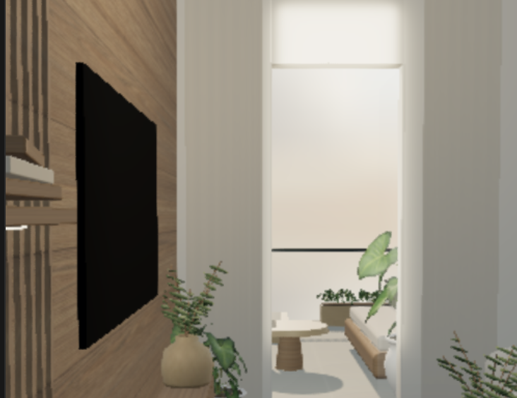
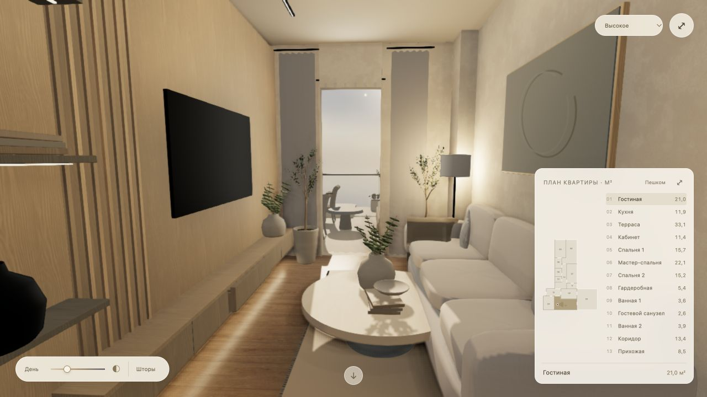
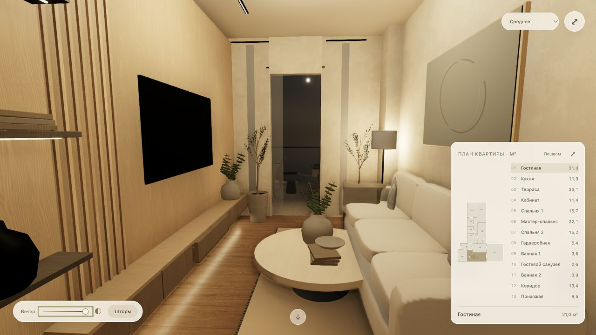
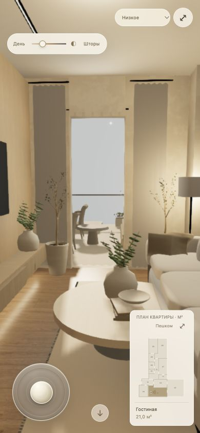

Vision Apartments · обновление квартиры
Слева — исходный кадр, присланный заказчиком. Справа — действующая WebGL-сцена после обновления. Ракурсы различаются. Снимок «после» получен прямо из работающего просмотра; он не подменяет квартиру фотографией.

До · присланный кадр

После · реальный кадр высокого режима

Вечер · запечённый непрямой свет и живые светильники

Узкий экран · Low. Проверка в браузере на компьютере, не замер телефона.
Открыть Residence → Открыть Atelier →
Графика улучшена, но равенство фотографии-референсу не заявляется. Для финального визуального уровня нужны детальные модели мебели, ткани и последующая художественная настройка.